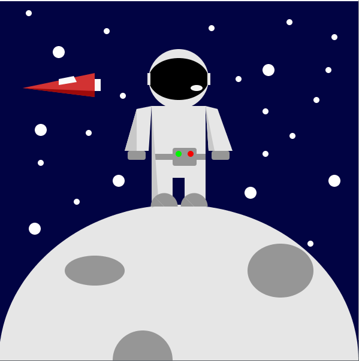

Para esta introducción decidí dibujar un astronauta con formas básicas como el rectangulo, elipses,
triangulos, además de crear sombras con las mismas formas. Para la luna utilicé una ellipse grande
con mini ellipses para las grietas y por último las estrellas con circulos y la nave con triangulos.
Este tp sirvió mucho para tener una aproximación del entorno y como dibujando con unas líneas simples
de código podés crear un dibujo.